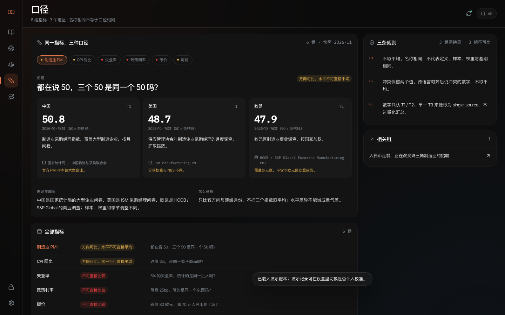
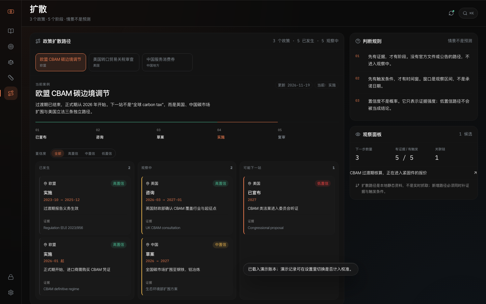

01 / 账本About chains
一条链，
必须能走通。
事件 → 两段传导 → 被改变的变量 → 对你生活的投影。每一步都有名称、数值和时间，不是一句“影响很大”。
反事实是必填项。1–3 个先行指标，每个带当前值、目标值和来源；到期前 72 小时置信度锁定，防止临门改口。
- 固定五段路径
- 1–3 个先行指标
- 来源 T1–T5
- 72h 置信度锁定
- 标签：宏观 / 政策 / 行业 / 个人
Local-first causal ledger · macOS
本地优先的因果账本。记录一条因果链，到期按纪律结算，再用真实结果校准你的置信度。没有账号，没有同步，数据只在本机。
Scroll · 8 chapters不是预测市场，也不是记账软件
把事件、两段传导、被改变的变量和对你生活的投影写成一条链。反事实必须提前写清：什么情况下这条链不成立。
到期才能结算。成立、不成立、证据不足；后两者必须写理由。结算后 10 秒内可撤销，撤销只作废记录，不删除审计。
0–100% 十档校准、HIT、Brier、ECE、90 天窗口、按类别筛选。样本不足 10 条时，只记录，不当作结论。
Origin · 2026-11-18
最初的产品规格书 · SPEC 0.1
把判断，
写成案由。“把这件事会怎样经过一条链，最终改变我生活里的哪个数”，写成可到期、可结算、可复核的记录。
— SPEC.md · 2026-11-18
拉丁语里的“原因、案由”，也是法律里的“事由”：一件已经立案、等待证据、到期必须给出结论的事。不叫 Ledger，因为它已被记账软件占满；不叫 Chain，因为它会被误认成区块链。
不是交易者，而是靠工资、经营或租金生活，同时大量阅读中外新闻的人。他们缺的不是信息，是传导路径、可证伪性和隐私。
记录推断、到期结算、按坐标投影。不预测股价，不给买卖信号，不接券商，不做社区喊单，不做广告推荐。
0.3 曾把未闭环的 04 / 05 / 06 从导航移除；0.5 把 04 口径对齐、05 政策扩散做成真实页面，06 本地镜像仍未做。少做，是为了让每一本都真的能用。
反事实优先。结算第一屏不是结论，而是“当初说好的不成立条件出现了吗”。
时间锁。到期前 72 小时置信度锁定；到期后必须结算；证据不足是诚实，不是失败。
本地优先。无账号、零遥测、SQLCipher + Keychain；数据不离开设备，除非你主动导出。
AI 不裁判。模型可以起草链条、整理证据，但不能自动改置信度，也不能替你结算。
事件 → 两段传导 → 被改变的变量 → 对你生活的投影。每一步都有名称、数值和时间，不是一句“影响很大”。
反事实是必填项。1–3 个先行指标，每个带当前值、目标值和来源；到期前 72 小时置信度锁定，防止临门改口。
只有到期或逾期才能结算。对话框先固定展示反事实与指标快照，再让你选成立、不成立或证据不足。
不成立与证据不足必须写理由。结算后 10 秒内可撤销；逾期仍可结算，但会标注逾期天数，不假装准时。
0–100% 十档，逐桶对比登记置信度与实际命中率；HIT、Brier、ECE 同时给出。证据不足不进 HIT / Brier 分母。
全部或最近 90 天；按链条标签筛选宏观、政策、行业、个人。样本不足 10 条时只记录，不把曲线当结论。
家庭 6 个数：月收入、固定支出、房贷、流动现金、总负债、赡养 / 子女。实时给出月缓冲、月供收入比、负债 / 年收入、缓冲月数。
每条链可以设置一个暴露目标与 deltaPct，按单变量平移。不把多条链的效果相加，也不编造叠加。
导入支付宝 / 微信 CSV，逐笔复核，把交易改判为房贷、固定或其他；转账、还款、理财自动跳过。
只估算月均支出与两类固定支出，确认后才写入家庭数字。没有 PDF 解析，没有支付直连。
SQLCipher AES-256。启动先读文件头；明文库或未链接 SQLCipher 直接拒绝启动。密钥存 macOS Keychain，应用没有网络模块。
每日自动加密备份，也可手动备份；VACUUM INTO 生成同样加密的副本，保留 7 份。JSON / Markdown 导出是明文，导入前先备份当前账本。
重置只清空链条与记录；销毁会删除数据库、全部加密备份和 Keychain 密钥。备份与数据库共用同一把密钥，少删一步都不算擦除。
必须先导出 JSON，再输入“销毁全部数据”。删除后退出重开，进入首次启动。
区分缺密钥、钥匙串锁定、权限拒绝、密钥不匹配；数据库存在时绝不新建密钥覆盖旧库。
恢复页可以重试、查看数据库与备份路径、在 Finder 中显示、从加密备份恢复；恢复前保留 before-restore 副本。
Recorded walkthrough · 00:51
从账本、结算、校准到账单复核。没有旁白，所有操作都是真实界面；底部字幕标出每一步在做什么。
账本首页：7 条演示链、逾期横幅、八项量化条；所有数据来自本地。
切换链条：事件、两段传导、变量、投影与反事实在同一条路径上。
结算对话框：先固定反事实与指标快照，再选择成立；确认后 10 秒内可撤销。
校准页：10 档曲线、90 天窗口、按类别筛选；个人样本 6 条时提示不下结论。
投影页：家庭暴露按 deltaPct 单变量平移，不叠加多条链。
账单复核：微信 CSV 逐笔分类，转账自动跳过，确认后才写入家庭数字。
⌘K 本地问答：输入“命中率”，答案只来自本地 state，不发起网络请求。
结束。加密、备份、擦除与恢复在下面的功能清单里逐项列出。
0.5 new · Research views
0.5 把最初五本账里的 04 口径对齐、05 政策扩散做成了真实页面。仍然是本地静态资料，不联网，也不假装预测。

6 组指标 × 中 / 美 / 欧。定义、样本、权重、频率逐项列出；只有定义完全一致才允许取平均，冲突时保留两个值。

3 个政策 × 5 个阶段。已发生 / 观察中 / 可能下一站；每一步必须有证据与触发条件，置信度不是概率。
04 / 05 已交付；06 本地镜像仍未做。研究视图是本地快照，新增路径必须同时补证据与触发条件。
Feature index · 0.5.0
Limits · 先看边界
Install · macOS
FAQ · 数据在哪里
不会。Rust 侧没有 HTTP 客户端，应用没有网络模块；保险箱里的“0 次请求”是实际状态。数据只写在本地 SQLCipher 数据库，密钥在 macOS Keychain。
在设置里导出 JSON，在新机器导入。导入前会先备份当前账本。加密备份与数据库共用 Keychain 密钥；备份文件不能脱离原机器的密钥单独解密。
不能解密。应用会明确报“数据库在，但 Keychain 密钥不见了”，并且不会新建密钥覆盖旧库。只有找回原密钥，或用同一密钥下的备份，才能恢复。
没有 Apple Developer 账号，release 只有 ad-hoc 签名、没有公证。首次打开需要“仍要打开”或去掉隔离标记；这不是安装损坏。
不会。没有接 Tauri updater；升级方式是下载新版本替换应用。数据库结构版本与 payload schema 分开记录，升级前仍建议导出 JSON。
不做。账单只支持支付宝 / 微信 CSV，用于估算月均支出；没有支付直连、银行接口或 PDF 解析。
至少 10 条可判定样本。低于 10 条时页面只记录曲线，不把它当结论；证据不足不计入 HIT / Brier 的分母。